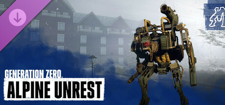
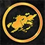

Mission lists
One page per content pack, each with the main and the side missions grouped by region.
Base game 44 main · 55 side missionsAlpine UnrestDLC
44 main · 55 side missionsAlpine UnrestDLC 10 main · 10 side missionsUnreleasedFiles only3 main · 3 side missions
10 main · 10 side missionsUnreleasedFiles only3 main · 3 side missions
In the files, not in the game
44 main · 55 side missionsAlpine UnrestDLC
9 main · 11 side missionsFNIX RisingDLC10 main · 10 side missionsUnreleasedFiles only3 main · 3 side missionsIn the files, not in the game
More
Warboard arcs 25 base-game main missions in the arcs Answers, Payback and SafetyChallenges34 challenges in 6 trees; every tier awards a titleAchievements
25 base-game main missions in the arcs Answers, Payback and SafetyChallenges34 challenges in 6 trees; every tier awards a titleAchievements
25 base-game main missions in the arcs Answers, Payback and SafetyChallenges34 challenges in 6 trees; every tier awards a titleAchievements
The 72 Steam achievements, grouped by what they ask forMissions by region
Click a number to open that region on its pack page.
| Region | Base game | Alpine Unrest | FNIX Rising | Unreleased | Total |
|---|---|---|---|---|---|
| Archipelago | 12 main · 8 side | – | 2 main | – | 22 |
| South Coast | 3 main · 9 side | – | 4 main · 7 side | – | 23 |
| Farmlands | 6 main · 9 side | – | 4 main · 3 side | – | 22 |
| Forest | 5 main · 9 side | – | – | – | 14 |
| Mountains | 7 main · 6 side | – | – | – | 13 |
| Marshlands | 6 main · 7 side | – | – | – | 13 |
| North Coast | 4 main · 7 side | – | – | – | 11 |
| Himfjäll (Alpine Unrest) | – | 9 main · 11 side | – | – | 20 |
| No region | 1 main | – | – | 3 main · 3 side | 7 |
From the game files
Mission names, summaries, briefings and objectives are the game's own English text, read from its mission table. A mission's region comes from the Location line of its briefing or, without one, from the map files the mission uses. The objective lists show what the game's mission log shows; some missions also run hidden script steps in between, which have no text and are left out.